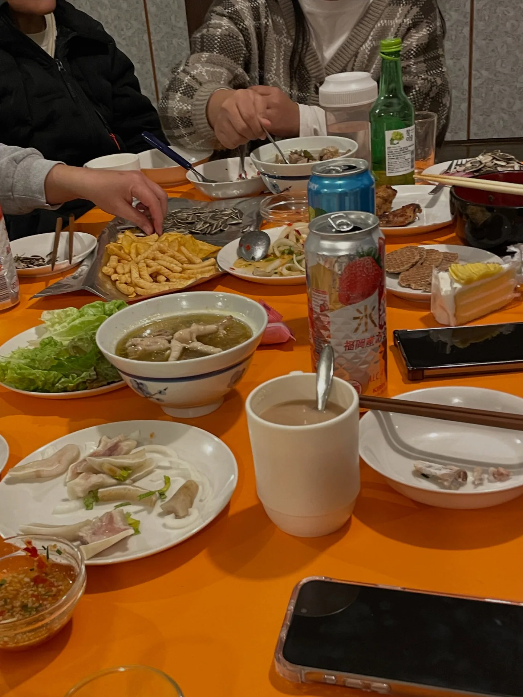
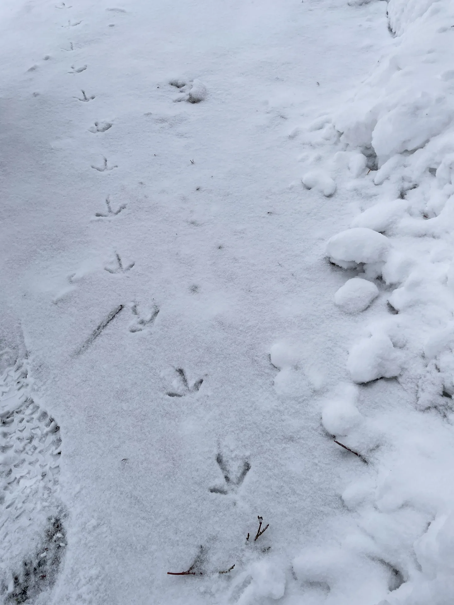
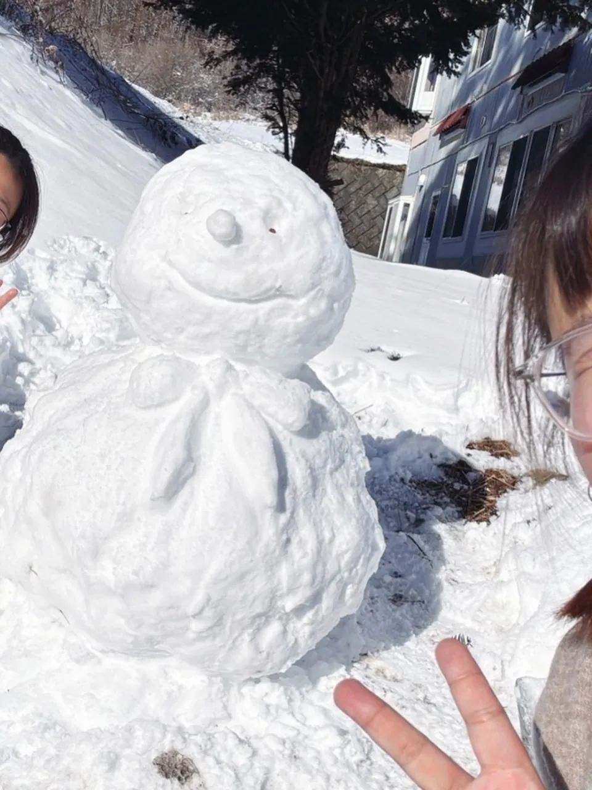
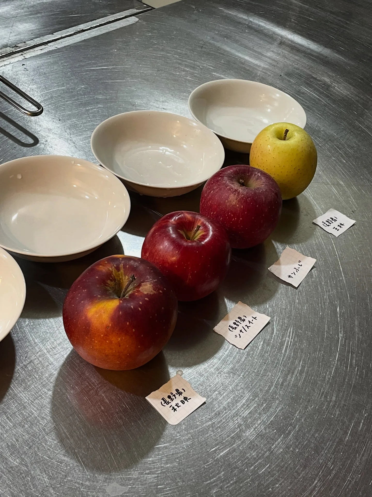
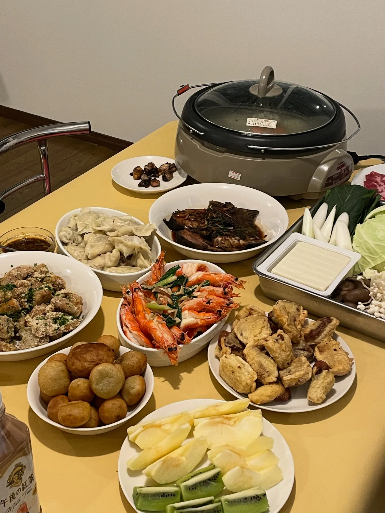
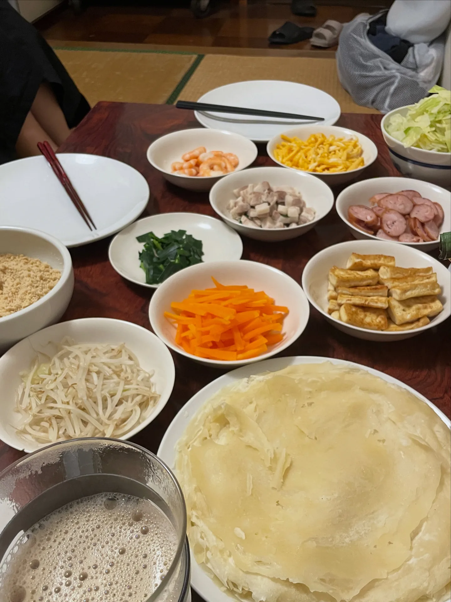

スキー場のホテルでバイト：長野・菅平高原の雪国生活
1年間のワーホリで、やっと最初で最後の、ちゃんとしたアルバイトをすることになりました！
雪のあるところで冬を過ごしたかった
「雪のあるところで冬を過ごして、スキーができる場所でスキーを覚える」。これが、私のワーホリのたったひとつの願いでした。日本語は限られていて（仕事に必要なレベルで言えば、実質「日本語が話せない」状態です）、北海道に行きたいと思った時期もありましたが、代行の人に連絡してもらっている間、面接や返事を待つのが不安でめんどうになって、来たものを受けることにしました（？）。
菅平高原のホテル
働いたホテルは長野の菅平高原にあって、標高は約1,300メートル。上田駅からバスで1時間かかります。お客さんは日本人が中心で、冬はスキーの名所、夏はスポーツ合宿の聖地です。運動場などの施設がたくさんあります（冬は全部雪に埋まっていますが）。
ホテルは300人以上泊まれて、メインのお客さんは学生の団体なので、忙しいときは本当にとんでもなく忙しいです。私のような冬季限定のバイトは20人近くいて、タイ人がいちばん多く、次にインドネシア人、台湾人はいちばん少なくて3人だけでした。ちょっとしたハプニングはあったものの、みんなお互いに尊重しあって、寛容で、やさしくて、大みそかにはいっしょにごはんも食べました。

ホテルの中から見た日本
仕事をしていると、学校ごとの管理のスタイルや、生徒との接し方のちがいが見えてきます。たとえば、モーニングコールに女の先生の歌声が入る学校があったり、男の先生が大声でどなって、生徒が泣くまで叱っている教育の現場を目撃したり、とてもおもしろかったです！ 男子校の団体もいて、坊主頭で男らしさいっぱいの高校生が、混み合ったバイキングの列でも騒がず、料理を取るときは後ろの女の子にすごく紳士的に譲っていました。今までとちがう角度から、日本の文化のほんの一角をのぞけて、ラッキーでした。
シフトと生活リズム
仕事はシフト制で、おおまかに、朝食、客室清掃（＋昼食）、夕食の3つの時間帯に分かれています。朝は5〜6時ごろに出勤して、夜は8〜9時ごろに終わり、早起きなので午後にお昼寝することもありました。毎日6〜8時間しか働いていないのに、なんだかぼんやり過ごしている感じで、残りの時間は少しだらだらしただけで消えてしまう……。朝9時から夜5時までの毎日の仕事を長くしていなかったので、この感覚を忘れていたのかもしれません XD


レストラン vs. 客室清掃
私はレストランの仕事のほうが好きでした。経営ゲームをしているような感覚で、料理の補充、バイキングの台の掃除、食器の片づけなどをします。客室清掃はどちらかというと苦手です。主に清掃の基準が、私の最低ラインからものすごーく遠かったからです。この仕事に触れたせいで、人間（ホテルの清掃）への信頼を失って、「拭くほうが拭かないより汚くなる」「だれも信じちゃだめ」といつも愚痴っています。
全体としては、ふつうの仕事と同じで、楽しいこととつらいことが同時にあって、やってみて初めて味がわかります。

雪国の冬：体の反応
ここの冬の気温は、だいたい−10〜0度で、想像していたほど寒くはありませんでした。少なくとも、持っている服を全部着れば、ほぼ寒くなかったですし、ニット帽はほとんどかぶりませんでした。寒くは感じなかったのに、最初の1か月半は、鼻水にいつも血が混じって、頭皮は乾燥のせいでフケが出るようになり、手の甲の関節は乾燥しすぎて2、3回血が出て、かかとは人生で初めてひび割れて、着いた2週目には風邪もひきました。それ以外は絶好調で、雪道で一度も転びませんでした！（ちょっと自慢してもいいですよね！！）

雪がもたらす日常
雪で、日常がまるっきり変わりました。歩いて7分の通勤が15分になったり、寮の前の20メートル以上ある車道に積もった雪を、何人か集まって30分かけて雪かきしたり。寮の部屋の窓辺は、そのまま冷蔵庫になります。寒いときは窓枠に氷が張って窓が開かなくなり、暖かいときは、窓辺にできた小さな湖みたいな融け水を掃除しなければいけません。部屋は暖房をつけないと生きていけないのに、電気ヒーターには「8時間で自動的に切れる」安全装置があって、寝る前に入れ直すのを忘れて、寝ている間に寒くて目が覚めたことが何度もありました。それから、まだスキーができなかったころは大雪がうっとうしかったのに、滑れるようになったら「もっと降って！」と思うようになりました。

雪のいろんな姿と、つらら
雪の姿はいろいろあります。降ったばかりの雪は、綿あめみたいなふわふわの氷のようです。1、2日いい天気が続くと、表面の雪が融けはじめて、日差しの下できらきら光り、くっつきやすくなって、雪玉を作ったり雪だるまを作ったりするのに最高の状態です。もう少し融けると、昔ながらのかき氷みたいな、大きな粒の透明な氷の結晶になって、その次は、ひとつながりの氷のようなつるつるの表面になります。これがいちばんいやな時期で、右に左にぴょんぴょん跳んでよけながら、もっと安全な足場を探すので、通勤の道のりがさらに時間がかかりました。

雪融けが続く日は、軒先にもたくさんつららができます。安全で低くて取りやすい場所を探して、大きくて長いつららを収穫して（？）、部屋の窓の外に挿しておく（？）のが、毎日のささやかな楽しみでした。お客さんが特大のつららを収穫していた（しかも、どこで採ったか教えてくれた）こともあって、つららの収穫は変なことじゃないとわかりました！ 私は一人じゃない！ XD

寮の同郷の仲間：ピン
ものすごく遠い山の中にある寮では、いろんな国から来たバイトの人たちと、地元の人が、混ざり合って、とくに仲良くなるのは自然なことのようです。ピンは私のルームメイトで、ここが彼女のワーホリの最初の地でした。ドラえもんみたいに、たくさんの生活用品と台湾のお菓子を持ってきて、生活の質を守ってくれて、ドライヤーもハンガーも持ってこなかった私を助けてくれました。性格はぜんぜん違うのに、初対面から意気投合。同じ台湾出身で、二人とも料理が好きで、同じ部屋で暮らして、いっしょに働いて、愚痴を言い合って、ごみを拾って再利用（？）するという後押しもあって、仲良くなりました。


数週間あとに現れたリュウ
もう一人の台湾人リュウは、数週間おくれて現れました。まだ社会に染まっていなくて、青春を大切にワーホリに来た男の子です。家におねえさんと妹さんがいるからか、いっしょにいて居心地がよく、ときどき男の子（ガキ）っぽくて、白目をむきたくなるときもあります。（後期には、プロのつらら収穫係にもなりました XD）
仲良くなったきっかけは、仕事の合間の雑談で、彼が炊飯器を持っているとわかったことだと思います。そのあと、スキーができることもわかって、休みの日にいっしょにごはんを食べたり、滑ったり、出かけたりするようになりました。退屈な日には、ピンと二人で、リュウの広い一人部屋に押しかけて遊びを探していました。（部屋が広いだけでなく、電気まで明るいんです！）


貴重ですてきな時間
貴重で、すてきな時間でした。3か月半は短くありません。目の前にいる人と友だちになるしかなかった台湾人3人が、とても仲良く過ごせました。まじめに働いて稼いで、まじめに遊びました。暮らしはシンプルで平凡で、楽しさは簡単に手に入って、ちょっと無邪気なくらいでした。まだこんなに無邪気でいられる機会があったことに、感謝しています。
続きを読む：〈日本でワーキングホリデーの1年：出発前の準備、お金のこと、あまり働かない暮らし方〉（2026-08-31）
キーワード長野上田菅平高原ワーキングホリデースキー場バイトホテルバイト雪国暮らし